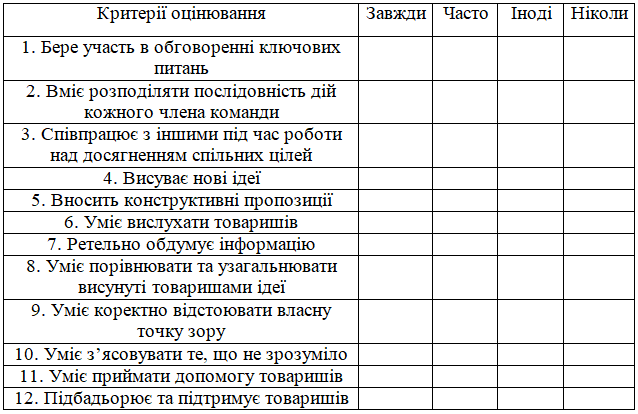

Зміст
Методика оцінення учнів
Універсальних критеріїв, на основі яких можна було б розробити єдину для усіх проектів систему оцінювання, звичайно, не існує. Проте можна надати деякі узагальненні рекомендації щодо оцінювання проектів.
Будь-який проект розрахований на активну діяльність учня, а одним з компонентів цієї діяльності є самооцінка. Отже, мають бути критерії, за допомогою яких учні зможуть надати змістову та розгорнуту характеристику власних результатів. Аналізуючи свої переваги та недоліки, учні навчаються оцінювати себе, будувати власну програму подальшої діяльності. Самооцінка дозволяє педагогу зібрати максимум корисної оцінної інформації, наприклад, про труднощі учня на різних етапах виконання проекту. Така інформація дозволяє здійснити змістовну корекцію освітнього процесу. Правильно організована рефлексія допомагає створити позитивну установку, що сприяє успішному виконанню проекту. Також важливими в оцінювання учнівських проектів зовнішнє оцінювання. У ролі експертів можуть виступати педагоги, однокласники, учні паралельних класів та старших класів, представники інших установ.
Вчителю стане зрозумілішим, як створювати критерії оцінювання, якщо конкретно визначити, що треба враховувати при їх розробці.
Можно виділити такі основні критерії оцінювання :
- ступінь самостійності у виконанні різних етапів роботи;
- ступінь включеності в групову роботу;
- практичне використання предметних і загальношкільних навчальних досягнень;
- кількість нової інформації використаної для виконання проекту;
- ступінь осмислення використаної інформації;
- рівень складності і ступінь володіння використаними методиками;
- оригінальність ідеї, способи вирішення проблеми;
- осмислення проблеми проекту і формулювання мети проекту або дослідження;
- рівень організації та проведення презентації;
- творчий підхід у підготовці об'єктів наочності презентації;
- соціальне і прикладне значення отриманих результатів.
Критерії оцінювання слід заздалегідь повідомити учням, для їх подальшої мотивації. Для довгострокових проектів можливо визначити критерії оцінювання діяльності учнів на кожному окремому етапі проекту. Виникає питання, як оцінювати роботу окремого учня у групових проектах. Також педагогу варто звернути увагу, що у навчальних групах є учні, які не зможуть набрати багато плюсів. Тому доцільно включати до критеріїв не тільки пункти щодо визначення рівня засвоєння знань та умінь, а й специфічні показники, які нададуть можливість підкреслити особливі здібності таких учнів. І тоді на захисті проекту кожний буде знати, чи багато чому він навчився в процесі роботи над проектом. Якщо критерії оцінювання мають достатню кількість пунктів, то усі учні отримують бали таким чином, що кожний може відчути, що він у чомусь найкращий. У цьому і є головний сенс розробки критеріїв оцінювання: здобуті знання та отримані навички отримують суспільне визнання, тобто визнаються цінними не тільки самим учнем, але й тими, хто поряд [45]. Наведемо приклад оцінювання внеску до роботи кожного учасника проекту
Слід заздалегідь, закріпити за кожним учнем роль, завдання або функції, що мають виконуватися. Таким чином можливо ефективно визначити внеск кожного з учасників проекту. Це дозволяє оцінити як якість роботи підгрупи у цілому, так і якість виконання кожним учасником своїх функціональних обов’язків. Створюючи критерії для самооцінювання, для оцінювання внеску кожного учня до роботи команди, педагогу треба пам’ятати, що вони мають допомагати організовувати діяльність учня, створювати умови для успішного завершення проекту. Отже, вся робота спрямована на досягнення цілі всього проекту – на його фінальний продукт, який потребує оцінювання. Результатами проекту можуть і повинні стати сформовані компетентності учнів.
Оцінювання роботи учасників проекту
Немає ніякого сумніву в тому, що уроки інформатики у поєднанні з міждисциплінарними проектами покликані впливати на формування і розвиток інформаційних компетентностей. Можна виділити наступні види діяльності:
- Знайомство з комп'ютером як з пристроєм для роботи з даними, отримання технічних навичок у роботі з різними пристроями і приладами (навушники, колонки, принтер, сканер, web-камера тощо),
- Володіння способами роботи з даними: пошук в каталогах, пошукових системах, ієрархічних структурах; вилучення даних з різних носіїв; систематизація, аналіз та відбір даних (різні види сортування, фільтри, запити, структурування файлової системи, проектування баз даних тощо).
- Технічні навички збереження, видалення, копіювання даних тощо.
- Перетворення даних (з графічною – в текстову, з аналогової – в цифрову тощо).
- Володіння навичками роботи з різними носіями інформації (мультимедійні довідники, електронні підручники, Інтернет-ресурси, освітні веб-платформи тощо.)
- Критичне ставлення до одержуваних даних, вміння виділяти головне, оцінювати ступінь достовірності (релевантність запиту, мережеві містифікації, тощо).
- Уміння застосовувати інформаційні та телекомунікаційні технології для вирішення широкого класу навчальних задач.